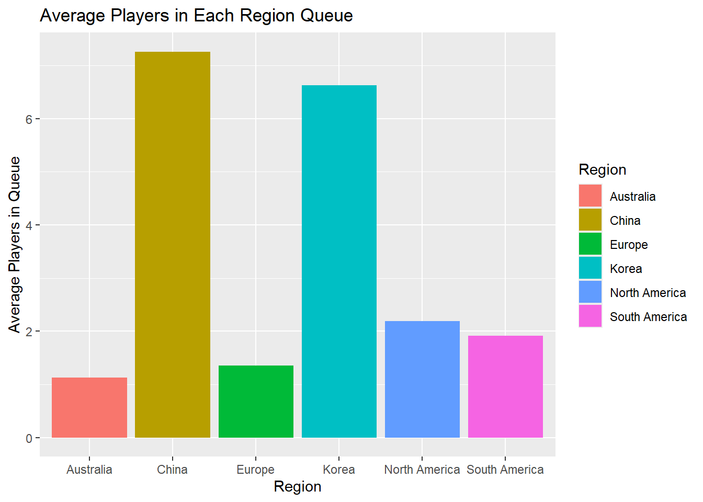
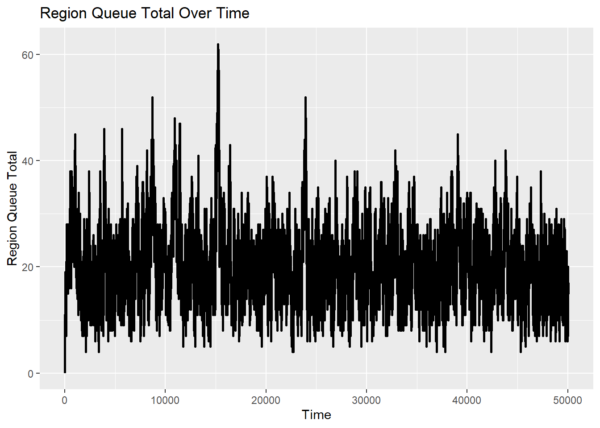
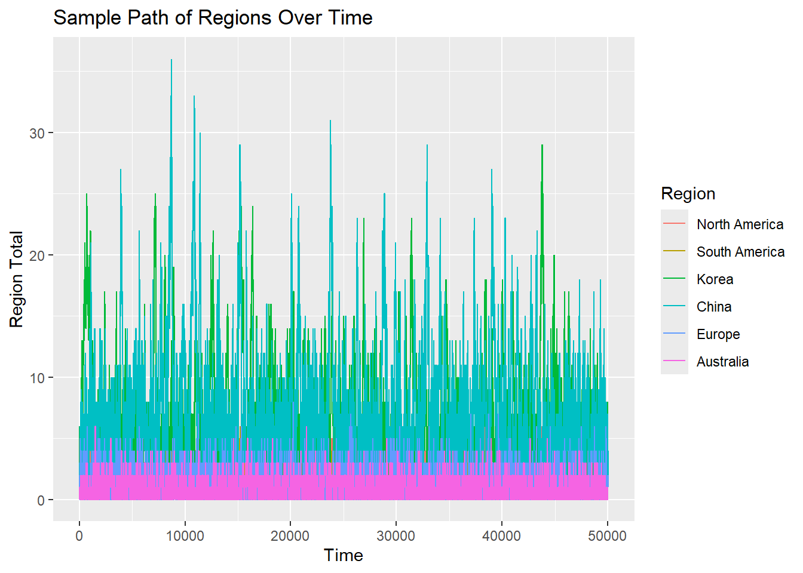
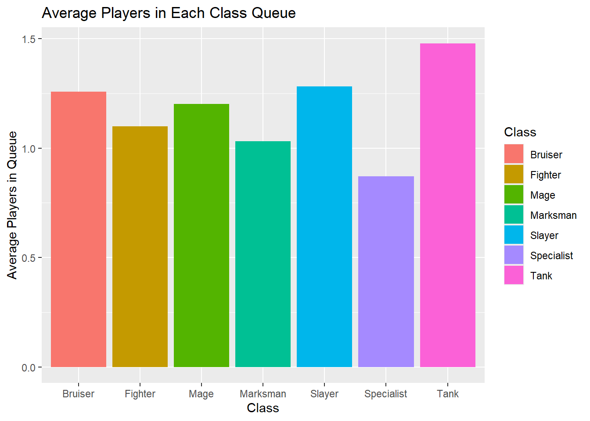
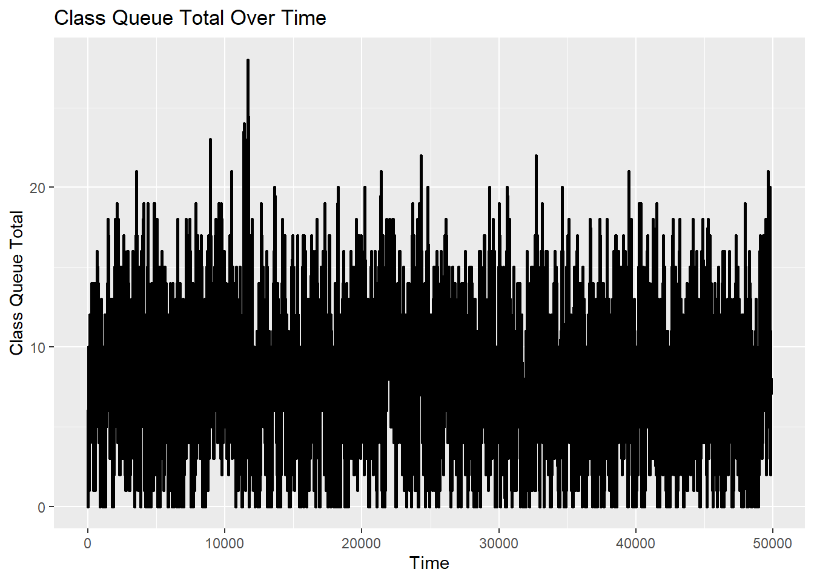
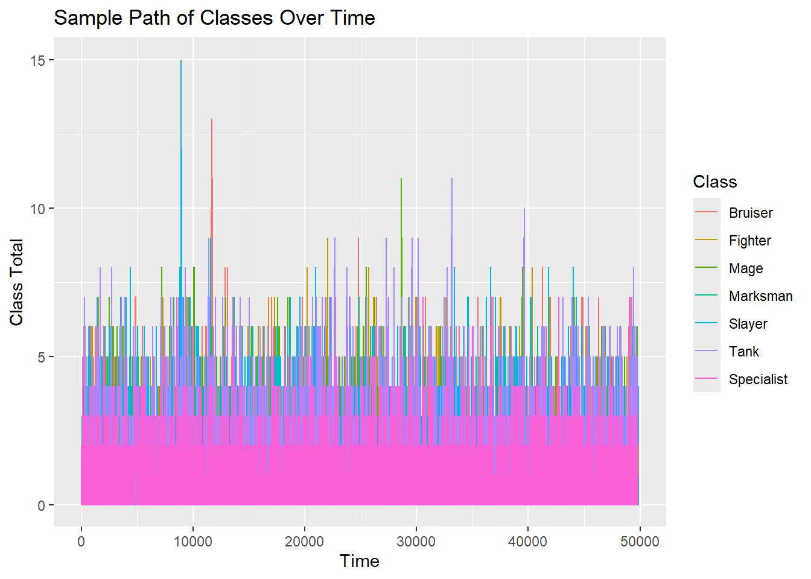
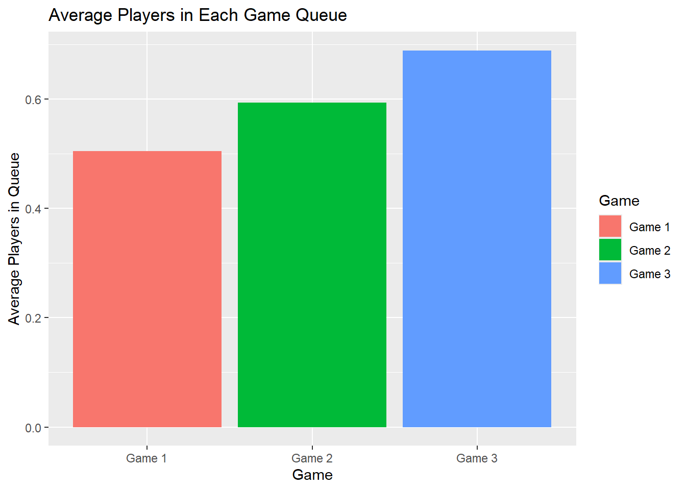
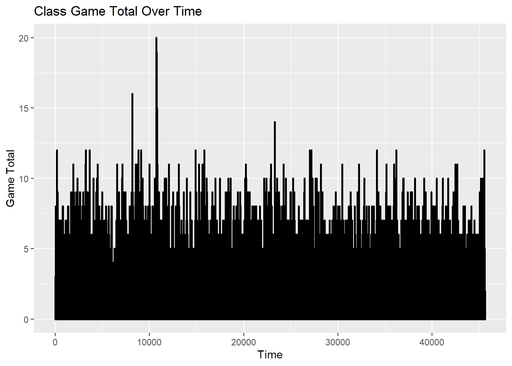
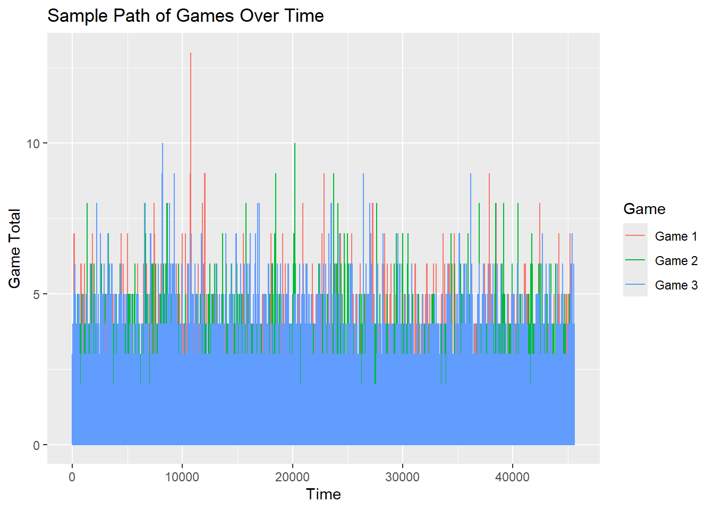

library(tidyverse)
library(markovchain) # for plotting state diagram
library(igraph)
library(expm)
library(viridis)
library(viridisLite)
library(ggpubr)
library(grid)
library(gridExtra)
library(prismatic) # for auto-contrast colors (black/numbers number in transition matrix heat map)
library(colourvalues) # for using with viridis
library(kableExtra)
library(reshape2)Multiplayer Videogame Server Queue Simulation
Abstract
In this project I aim to research more on the Jackson Network (Jacksonian Network) found in queuing theory. First I will discuss the theory and ideas behind Jackson Networks. Then I will use this in an actual application, where I will using a League of Legends as my example. League of Legends is a Multiplayer Online Battle Arena game (MOBA), where involves a total of 10 players for a match to begin, where each team has 5 players and both teams must work cooperatively to defeat the other team and take control of their side of the map. In this scenario I will be simulating individual players and the amount of time they spend in game, starting from the moment a player “queues” for a match from different regions in the world, where players will queue to choose one of seven different warrior classes, which vary in popularity in different regions. From there players can connect to three different servers, where some regions can connect to the region, but some regions cannot connect to others. This is meant to be a challenging premise, where there will be three sections of multiple queues. I plan to simulate multiple nodes. It will be an expanded version of the pictures below, found on Wikipedia from the Jackson Network page. I will be assuming this is an open Jackson Network, where there will be exogeneous inputs and will also depart at exogenous times as well. I want the queues to run at the same times, where times will be indepedent of other nodes / queues. The diagram on the LibreText also show a returning queue, but for my scenario I want to simplify one direction.
Sources
6.7: Jackson Networks
Wikipedia - Jackson Networks
https://en.wikipedia.org/wiki/Jackson_network

What is Jackson Networks
To put it simply, a Jackson Network is a queuing system where customers process through different queues before leaving the system. Each queue is considered a node with an arrival rate and a service rate. In most cases outside nodes that are not interconnected in this network are considered exogenous arrivals (external arrivals). In a theoretical Jackson Network, customers enter one queue and decide if they want to leave or go to another queue and so on. Each queue follows a poisson arrival (\(\lambda\)) and are serviced with an exponential rate (\(\mu\)). A customers choice to do anything they want at any node are IID and independent of all service times, inputs, and other customer routing. Routing is assumed instantaneous. The network is a Markov process, where customers are in a state and state changes occur when exogenous arrivals and departures happen.
The balance equation of exogeneous arrival rates and services times and routing probabilities have to be consistent given by:
\[ \lambda_i Q_{ij} = \lambda_j Q^*_{ji} \]
The balance equation for a Jackson Network, considering all possible state transitions, is:
\[ \sum_{m'} q^*_{m, m'} = \sum_{j=1}^{k} \lambda_0 Q^*_{0j} + \sum_{i: m_j > 0} \mu_i Q^*_{i0} + \sum_{i: m_j > 0} \mu_i \sum_{j=1}^{k} Q^*_{ij} \]
Which is the sum of all possible transition from state m to another state m. Similar to something that I will create later. In other words, we can start by looking at steady-state distribution of the Jackson Network.
The same full balance equation is:
\[ \sum_{m'} q^*_{m, m'} = \lambda_0 + \sum_{i : m_i > 0} \mu_i \]
Idea about Simulation and Example

Parameters
The queues will mostly follow an exponential distribution, where rates will be in minutes. The entire process should take nearly hours to finish a game. However, this simulation may not represent that these games do take long hours to finish. However, the main purpose of this project is to explore the ideas of Jackson Networks, even if this specific function may not work. According to
Region Queues
First establish the region queues. I have six main regions with North America, South America, Europe, China, Korea, and Australia. Some of the main regions in this supped game, I will say each region will have their own expected probabilities for each of the character class. For example, I will say North America have a higher chance of choosing a Marksman over another region like South America.
Classes
There will be seven classes the queues will lead to. Like I stated earlier choosing one region will increase the probability of going to one queue to another. The seven classes are listed as follow. Bruiser, Fighter, Mage, Marksman, Slayer,Tank, Specialist. Each will be their own queue and have different rates to go on to the next server. Finally I plan to have three queues for the game, these games will plan to take an hour each. so really it should have a lambda of 1/60 for all queues. I simplified this problem to three queues to simulate the sample of players I am looking it. Imagine we are simulating if players join games in the same servers, and they come together from different regions and different classes.
lambda_values_s <- c("NA" = 1, "SA" = 1, "KR" = 2, "CH" = 2, "EU" = 0.5, "AU" = 0.5)
mu_values_s <- c("NA" = 0.6, "SA" = 0.75, "KR" = 0.5, "CH" = 0.5, "EU" = 0.6, "AU" = 0.8)
mu_values_c <- c("Bruiser" = 2, "Fighter" = 1, "Mage" = 1, "Marksman" = 0.5, "Slayer" = 0.2, "Tank" = 1, "Specialist" = 0.1)
mu_values_g <- c("Game 1" = 60, "Game 2" = 120, "Game 3" = 30)
sd_values_g <- c("Game 1" = 10, "Game 2" = 20, "Game 3" = 5)
server_indices <- c("NA" = 1, "SA" = 2, "KR" = 3, "CH" = 4, "EU" = 5, "AU" = 6)
class_indices <- c("Bruiser" = 1, "Fighter" = 2, "Mage" = 3, "Marksman" = 4, "Slayer" = 5, "Tank" = 6, "Specialist" = 7)
game_indices <- c("Game 1" = 1, "Game 2" = 2, "Game 3" = 3)
region_to_class_probs <- matrix(
c(0.2, 0.1, 0.15, 0.2, 0.1, 0.15, 0.1, # NA
0.15, 0.2, 0.1, 0.15, 0.2, 0.1, 0.1, # SA
0.1, 0.15, 0.2, 0.1, 0.15, 0.2, 0.1, # KR
0.2, 0.1, 0.1, 0.15, 0.15, 0.2, 0.1, # CH
0.1, 0.2, 0.15, 0.1, 0.2, 0.15, 0.1, # EU
0.15, 0.1, 0.2, 0.1, 0.1, 0.2, 0.15), # AU
nrow = 6, byrow = TRUE,
dimnames = list(c("NA", "SA", "KR", "CH", "EU", "AU"), c("Bruiser", "Fighter", "Mage", "Marksman", "Slayer", "Tank", "Specialist"))
)
class_to_game_probs <- matrix(
c(0.0, 0.3, 0.7, # Bruiser
0.2, 0.3, 0.5, # Fighter
0.3, 0.4, 0.3, # Mage
0.0, 0.6, 0.4, # Marksman
0.5, 0.0, 0.5, # Slayer
0.5, 0.2, 0.3, # Tank
0.1, 0.9, 0.0), # Specialist
nrow = 7, byrow = TRUE,
dimnames = list(c("Bruiser", "Fighter", "Mage", "Marksman", "Slayer", "Tank", "Specialist"), c("Game 1", "Game 2", "Game 3"))
)
player_lim = 5
n_jumps = 100000
region_t = matrix(0, nrow = n_jumps + 1, ncol = 6)
class_t = matrix(0, nrow = n_jumps + 1, ncol = 7)
game_t = matrix(0, nrow = n_jumps + 1, ncol = 3)
W_n = matrix(0, nrow = n_jumps + 1, ncol = 3)
W_n[1, ] = 0
for (n in 2:n_jumps){
server <- sample(c("NA", "SA", "KR", "CH", "EU", "AU"), 1, prob = c(0.1, 0.05, 0.2, 0.3, 0.2, 0.05))
lambda <- lambda_values_s[server]
mu <- mu_values_s[server]
rate = lambda + sum(mu*pmin(player_lim, region_t[n - 1, server_indices[server]]))
service_rate = sum(mu*pmin(player_lim, region_t[n - 1, server_indices[server]]))
p_arrive = lambda / rate
p_service = service_rate / rate
decision <- sample(c("arrival", "service"), size = 1, prob = c(p_arrive, p_service))
region_t[n, ] <- region_t[n - 1, ]
class_t[n, ] <- class_t[n - 1, ]
game_t[n, ] <- game_t[n - 1, ]
departing_player <- FALSE # Track if someone leaves for next queue
curr_ind <- server_indices[server]
region_t[n, ] = region_t[n - 1, ]
W_n[n, 1] = W_n[n - 1, 1] + rexp(1) / (lambda_values_s[server] + mu_values_s[server] * min(player_lim, region_t[n - 1, curr_ind]))
if (decision == "arrival") {
region_t[n, curr_ind] = region_t[n - 1, curr_ind] + 1
} else {
region_t[n, curr_ind] <- region_t[n - 1, curr_ind] - 1
departing_player <- TRUE
}
if (departing_player) {
class_selected <- sample(names(class_indices),
1,
prob = region_to_class_probs[server, ])
class_ind <- class_indices[class_selected]
class_t[n, class_ind] <- class_t[n - 1, class_ind] + 1
}
if (sum(class_t[n - 1, ] > 0) > 0) {
active_classes <- names(class_indices)[class_t[n - 1, ] > 0]
selected_class <- sample(active_classes, 1)
class_ind <- class_indices[selected_class]
W_n[n, 2] = W_n[n - 1, 2] + rexp(1) / (1 + mu_values_c[class_ind] * min(player_lim, class_t[n - 1, class_ind]))
# Lambda will be 1 once we immediately place it into the queue.
mu_class <- sum(mu*pmin(player_lim, class_t[n - 1, class_indices[class_ind]]))
service_prob <- mu_class / (mu_class + 1)
if (runif(1) < service_prob) {
class_t[n, class_ind] <- class_t[n - 1, class_ind] - 1
game_selected <- sample(names(game_indices),
1,
prob = class_to_game_probs[class_ind, ])
game_ind <- game_indices[game_selected]
game_t[n, game_ind] <- class_t[n - 1, game_ind] + 1
}
} else {
W_n[n, 2] = W_n[n - 1, 2]
}
if (sum(game_t[n - 1, ] > 0) > 0) {
active_games <- names(game_indices)[game_t[n - 1, ] > 0]
selected_game <- sample(active_games, 1)
game_ind <- game_indices[selected_game]
W_n[n, 3] <- W_n[n - 1, 3] + rnorm(1,
mean = mu_values_g[selected_game],
sd = sd_values_g[selected_game]) /
(1 + mu_values_g[selected_game] * min(player_lim, game_t[n - 1, game_ind]))
mu_game <- mu_values_g[selected_game]
service_prob <- mu_game / (mu_game + 1)
if (runif(1) < service_prob) {
game_t[n, game_ind] <- game_t[n - 1, game_ind] - 1
}
} else {
W_n[n, 3] <- W_n[n - 1, 3]
}
}
region_t <- na.omit(region_t)
class_t <- na.omit(class_t)
game_t <- na.omit(game_t)
W_n <- na.omit(W_n)Code Bresakdown
Similar to how the Costco Time Application functions, I wanted this project and function to work in a similar manner. The struggle is connecting three individual queues and gathering times for those to work. Considerably, one of the biggest concerns I had was the number of short exponential times that I need to combine. While this function might not be necessarily correct in how it functions and it could be written more correct, I wanted to focus more on the ideas of Jacksonian Networks. First this paragraph will describe what is different from this code to the Costco application.
The first major change is that all queues have their own lambda and mu’s. Which are not exclusive to just one rate. This will be more apparent when I produce graphs of how many players are in each queue. For this specifically simulation, I’m exaggerating how Asian countries like China and South Korea have more players. This is more true in the real world of League of Legends, where a majority of players are from these specific countries, but they have many more servers and countries than this simplified version.
The second major change in this project is that I have created a transition matrix between queues. I was surprised on how this works, but it made sense to figure out where the next transition in what state would lead to another. For the regions to class transition matrix, I wanted all regions to have a transition to another queue, so no cell is set to 0. However, for the class to game indices I figured some class types could be potentially “banned” from the simplified three games I had running at the time.
Additional Notes
I did try and implement a tracking for each individual players, however this code wouldn’t work. For a future project if I look back at this I would try and implement this so I can have individual. So for now, in the scope of this project. I want to focus on distribution of the number of players in each queue. I also do not know if my implementation of a normal distribution for the time works. I lose the memoryless property by changing this to a normal distribution. However, I think the times for these ones are reasonable. Some times the implementation to the second queue can add two to the next queue, however I am very happy with the results. My times for each one may be incorrect and from the LibreTexts, the service times at all other nodes are independent of exogenous arrival times at all nodes.
region_c_total <- data.frame(colMeans(region_t, na.rm = TRUE))
colnames(region_c_total)[1] <- "count"
region_c_total$Region <- c("North America", "South America", "Korea", "China", "Europe", "Australia")
class_c_total <- data.frame(colMeans(class_t, na.rm = TRUE))
colnames(class_c_total)[1] <- "count"
class_c_total$Class <- c("Bruiser", "Fighter", "Mage", "Marksman", "Slayer", "Tank", "Specialist")
game_c_total <- data.frame(colMeans(game_t, na.rm = TRUE))
colnames(game_c_total)[1] <- "count"
game_c_total$Game <- c("Game 1", "Game 2", "Game 3")
region_r_total <- rowSums(region_t, na.rm = TRUE)
class_r_total <- rowSums(class_t, na.rm = TRUE)
game_r_total <- rowSums(game_t, na.rm = TRUE)
total_df <- data.frame(
t = W_n,
region_total = region_r_total,
class_total = class_r_total,
game_total = game_r_total
)ggplot(region_c_total, aes(x = Region, y = count, fill = Region)) +
geom_bar(stat = "identity") +
labs(title = "Average Players in Each Region Queue",
x = "Region",
y = "Average Players in Queue")
region_df <- data.frame(t.1 = total_df$t.1, region_total = total_df$region_total)
ggplot(region_df, aes(x = t.1, y = region_total)) +
geom_line(size = 1) +
labs(x = "Time", y = "Region Queue Total", title = "Region Queue Total Over Time")Warning: Using `size` aesthetic for lines was deprecated in ggplot2 3.4.0.
ℹ Please use `linewidth` instead.
region_t_df <- as.data.frame(region_t)
region_t_df$total <- rowSums(region_t_df, na.rm = TRUE)
region_t_df$t <- W_n[,1]
col_plot <- paste0("V", 1:ncol(region_t))
d_long_1 <- melt(region_t_df[, c("t", col_plot)], id.vars = "t")
d_long_1$variable <- factor(d_long_1$variable, levels = col_plot, labels = c("North America", "South America", "Korea", "China", "Europe", "Australia"))
d_long_1 <- na.omit(d_long_1)
ggplot(d_long_1, aes(x = t, y = value, col = variable)) +
geom_line() +
labs(x = "Time", y = "Region Total", color = "Region", title = "Sample Path of Regions Over Time")
Region
Here in Region, Korea and China will have the largest queues, but also one of the fastest processing queues. In the total queue, it never goes near a point near 0 players in the queue, but it does stabilize around 30 players in the queue on average. By these numbers, thousands of players will have gone through the queue in a near 10 hour span. From the sample paths over the regions, China and Korea once again have one of the most volatile queues, spiking near 30 in the queue by itself, while the other queues stay relatively low. I wanted the other countries to not have as many, because in the real game, the queues from other servers are not as long as those servers. You also need Chinese or Korean I.D. to access these servers, so it’s a surprise how large these queues can actually become.
ggplot(class_c_total, aes(x = Class, y = count, fill = Class)) +
geom_bar(stat = "identity") +
labs(title = "Average Players in Each Class Queue",
x = "Class",
y = "Average Players in Queue")
class_df <- data.frame(t.2 = total_df$t.2, class_total = total_df$class_total)
ggplot(class_df, aes(x = t.2, y = class_total)) +
geom_line(size = 1) +
labs(x = "Time", y = "Class Queue Total", title = "Class Queue Total Over Time")
class_t_df <- as.data.frame(class_t)
class_t_df$total <- rowSums(class_t_df, na.rm = TRUE)
class_t_df$t <- W_n[,2]
col_plot_class <- paste0("V", 1:ncol(class_t))
d_long_class <- melt(class_t_df[, c("t", col_plot_class)], id.vars = "t")
d_long_class$variable <- factor(d_long_class$variable, levels = col_plot_class, labels = c("Bruiser", "Fighter", "Mage", "Marksman", "Slayer", "Tank", "Specialist"))
d_long_class <- na.omit(d_long_class)
ggplot(d_long_class, aes(x = t, y = value, col = variable)) +
geom_line() +
labs(x = "Time", y = "Class Total", color = "Class", title = "Sample Path of Classes Over Time")
Class
Class queues shouldn’t have that many players in each queue. The only concerning ones should be bruiser and fighters, which do spike. But most of the classes are relatively equal. Specialist should have the lowest queue, as most players do not play this class specifically. But overall this graph seems representative of an actual League of Legends players journey. The largest bottle neck of this process should be connecting to the servers and the actual game itself which takes nearly an hour each. Tanks do show up at the top as well with the highest queues but the class queues themselves are very quick as well.
ggplot(game_c_total, aes(x = Game, y = count, fill = Game)) +
geom_bar(stat = "identity") +
labs(title = "Average Players in Each Game Queue",
x = "Game",
y = "Average Players in Queue")
game_df <- data.frame(t.3 = total_df$t.3, game_total = total_df$game_total)
ggplot(game_df, aes(x = t.3, y = game_total)) +
geom_line(size = 1) +
labs(x = "Time", y = "Game Total", title = "Class Game Total Over Time")
game_t_df <- as.data.frame(game_t)
game_t_df$total <- rowSums(game_t_df, na.rm = TRUE)
game_t_df$t <- W_n[,3]
col_plot_game <- paste0("V", 1:ncol(game_t))
d_long_game <- melt(game_t_df[, c("t", col_plot_game)], id.vars = "t")
d_long_game$variable <- factor(d_long_game$variable, levels = col_plot_game, labels = c("Game 1", "Game 2", "Game 3"))
d_long_game <- na.omit(d_long_game)
ggplot(d_long_game, aes(x = t, y = value, col = variable)) +
geom_line() +
labs(x = "Time", y = "Game Total", color = "Game", title = "Sample Path of Games Over Time")
Game
It’s surprising to see Game 2 being so high with the queues. Again I expected to see a lot of volatility from this queue because the times are following a normal distribution instead. Game 3 having the shortest queues also makes sense, because the normal distribution it follows is way shorter than Game 2’s queue. Game 1 is in the middle and shows that the normal distribution affecting the queues does work.
Notes
Again, I believed that the normal distribution was implemented correctly here. But it could be that it wasn’t correct and the transition matrix is working well. Unfortunately I don’t know the theory behind that to work yet.
Conclusion
I hope my analytics and my simulation was enough exploration for the scope of this class. I believe my code and output are mostly correct with appropriate changes that go outside of the class. When thinking about Jacksonian Networks, I wasn’t expecting to use the transition matrices when changing from queue to queue. The discussion are correct because of the way that Is et them up. And while my code and premise do not align with what it sates on LibreText and Wikipedia. I felt that when I was taking the entirety of STAT 545, I didn’t understand the use of learning stochastic processes until I started reading about queuing theory. Especially when it comes to the work place and management and Jackson Networks. It’s obvious how management science uses this concept a lot and how they rely on graphs like the ones above. Not only could this work in queues, but call centers, product lines, DMV lines, and so much more. research into other areas I didn’t think could be useful to apply towards.